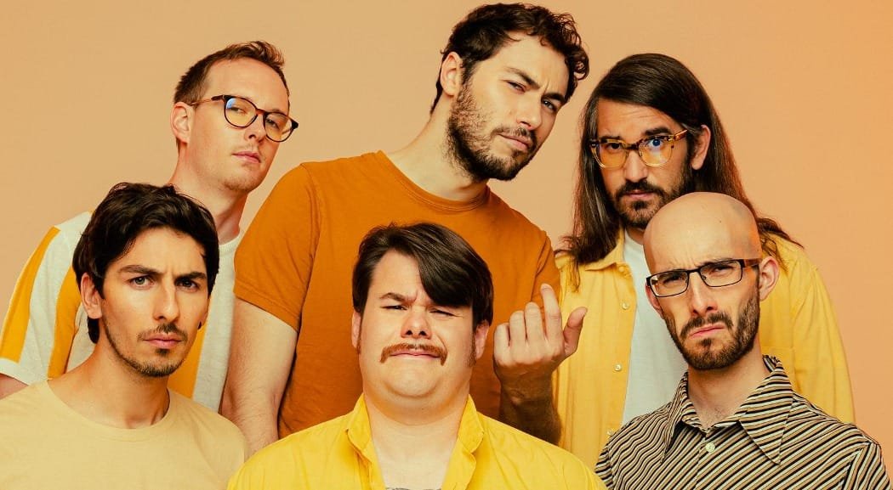
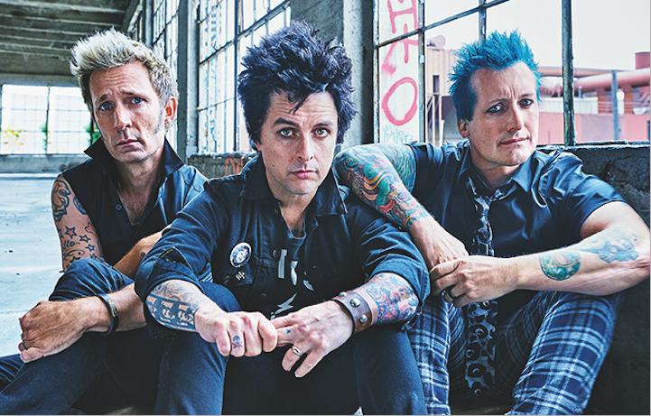
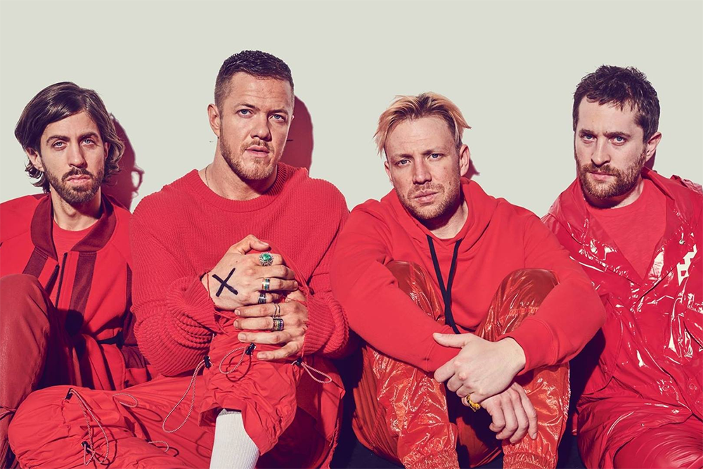

Queen
Periodo di attività: 1970-1997
Mi sembra doveroso inserire in classifica quella che è è probabilmente la band più iconica
di tutti i tempi. I Queen sono arrivati ed hanno cambiato la musica ed il modo di suonare. Dal
loro debutto tra il grande pubblico con Killer Queen fino alla triste The Show Must Go On
i brani dei Queen hanno fatto il giro del mondo e continuano a farlo ancora oggi, grazie anche alla
popolarità tra le nuove generazioni ottenuta grazie al Bohemian Rhapsody, che ha elevato il
frontman del gruppo Freddie Mercury alla gloria eterna (non che prima non ne fosse degno!). La performance
al concerto Live Aid è semplicemente sensazionale. Ammetto di non conoscere molte delle canzoni della band,
a parte le più famose, ma non potevo lasciare fuori il gruppo che più di tutti ha rivoluzionato il mondo della musica.
Potrei continuare con gli elogi, ma eviterò mollichismi.
Brano preferito: Bohemian Rhapsody.
5.

Pinguini Tattici Nucleari
Periodo di attività: 2010-oggi
I PTN sono l'unico gruppo italiano che ho scelto per questa lista. Partiti dal cantare in chiesa,
hanno fatto una lunga gavetta che li ha portati a partecipare al Festival di Sanremo nel 2020 con il
brano Ringo Starr, dove hanno trovato la ribalta. Io li conoscevo già da qualche tempo prima,
catturato dalle sonorità originali del gruppo e dai testi mai banali e ricchi di riferimenti alla cultura
pop, marchio distintivo del gruppo, ben presente ancora oggi. Negli ultimi anni le sonorità delle canzoni sono
divenute meno Indie e più Pop, ma ogni volta che sento una loro canzone alla radio, non posso
fare a meno di alzare il volume. E in fondo, non è forse vero che In un mondo di John e di Paul
siamo tutti Ringo Starr?
Brano preferito: Cancelleria.
4.

Green Day
Periodo di attività: 1986-oggi
I don't wanna be an american idiot! Alzi la mano chi non l'ha letta cantando. I Green Day
sono uno dei gruppi più di successo degli ultimi 30 anni, vere e proprie icone del
Punk Rock, simbolo di ribellione adolescenziale (ma anche di buona musica!). Negli anni la
band è maturata molto, componendo brani dal significato profondo e dalla forte carica emotiva, salvo
poi tornare a suoni più punk (sebbene con scarso successo). Ogni volta che sento un brano dei Green Day
non posso fare a meno che cantare e - se non mi vede nessuno - scatenarmi travolto dalla loro carica.
Pensate che hanno pure cantato la sigla dei Simpson in un loro concerto a Springfield!
Di certo vorrà pur dire qualcosa...
Brano preferito: Basket Case.
3.

Imagine Dragons
Periodo di attività: 2008-oggi
Natale 2012, mia cugina mi regala "PES 2013" per la Wii. Il gioco vanta una colonna
sonora di tutto rispetto e, tra le canzoni presenti, una mi colpisce in particolare: On Top of The World
di un certo gruppo conosciuto come "Imagine Dragons". Quando qualche tempo dopo il brano fu rilasciato
ufficialmente come singolo rimasi senza parole nel sentirlo in radio e da lì a poco ho cominciato ad
ascoltare sempre più canzoni della band, che è diventata una delle mie preferite, facendomi capire
la mia passione per l'Alternative Rock. Negli anni gli Imagine Dragons hanno variato poco la loro
formula, strizzando più volte l'occhio al Pop, ma sono sempre stati in grado di comporre brani
orecchiabili e di successo. Degna di menzione è la collaborazione con Elisa per il brano Birds.
Brano preferito: On Top Of The World.
2.

Linkin Park
Periodo di attività: 1996-2017
Al primo posto non posso che mettere la band che mi ha introdotto al genere dell'
Alternative Rock. I Linkin Park mi hanno catturato sin dalla prima volta che li ho ascoltati
e, riscoprendoli, ho avuto modo di apprezzare tutti i generi musicali che hanno toccato nella loro
carriera, dal Nu Metal all'Electronic Rock. Nati nel 1996 a Los Angeles sotto intuizione
di Mike Shinoda, negli anni hanno mostrato il loro amore per la musica in tante forme diverse, mostrando
più e più volte di sapersi reinventare, mettendo a segno collaborazioni sempre interessanti.
Uno dei miei sogni era andarli a vedere
in concerto, ma purtroppo questo non è più possibile dato che Chester Bennington, il frontman del gruppo,
si è tolto la vita ormai quasi 6 anni fa. Ad ogni modo, i Linkin Park hanno segnato la scena musicale come
pochi altri gruppi hanno saputo fare, ed hanno lasciato un ricordo indelebile nelle menti di coloro cresciuti
negli anni '00 e '10. Immortali.
Brano preferito: Burn It Down.
1.